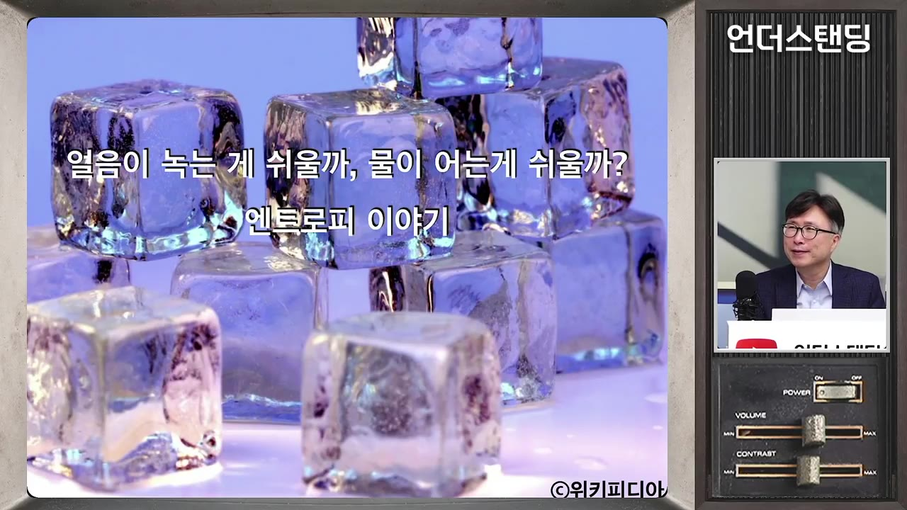
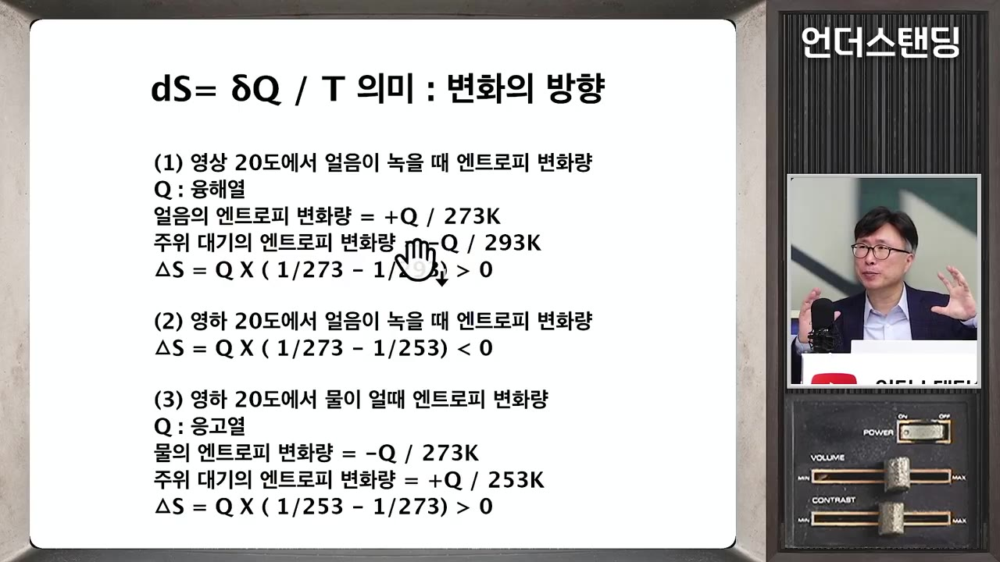

"엔트로피는 무질서 아니다" 스페이스X 로켓부터 배터리까지 지배하는 단 하나의 공식 '깁스 에너지' (에스엔에이치연구소 민태기 소장)
▶ 원본 영상 보기한눈에 보기
- 엔트로피는 "무질서가 늘어난다"가 아니라, 주어진 조건(온도·압력 등 주변 환경)에서 변화가 어느 방향으로 자발적으로 일어나는지를 정해 주는 개념이다.
- 얼음은 영상 20도에서는 녹는 쪽, 영하 20도에서는 물이 어는 쪽이 자발적이다. 같은 물질도 환경이 달라지면 방향이 뒤집힌다.
- 이를 실용적으로 정리한 것이 깁스 자유에너지(ΔG = ΔH − TΔS)이며, 깁스 에너지가 줄어드는 쪽이 자발적 변화다.
- 합금(알루미늄-실리콘), 배터리 소재, 로켓 연료(메탄 등) 선정의 이론적 근거로 쓰여 시행착오를 줄여 준다.
- 핵심 교훈은 "답은 조건에 따라 다르다" — 물리 법칙을 경제·사회에 곧바로 갖다 붙이는 것도 경계해야 한다.
이런 분께 도움이 됩니다
- "엔트로피 = 무질서"에서 한 걸음 더 나아가 공학·산업에서 쓰이는 의미를 알고 싶은 분.
- 열역학이 합금·배터리·로켓 설계에 어떻게 연결되는지 큰 그림을 얻고 싶은 분.
핵심 내용
엔트로피의 핵심: 변화의 방향
- 엔트로피는 무질서의 척도가 아니라 조건이 주어졌을 때 변화가 향하는 방향을 판단하는 기준이다. 물리학에서도 "무질서" 표현을 쓰지 말자는 움직임이 있다고 한다. (2:29, 4:45)
- 질문 "얼음이 녹는 게 쉬울까, 물이 어는 게 쉬울까?"의 답은 "환경(적도냐 북극이냐)에 따라 다르다"이다.
- 잉크가 물에 균일하게 퍼진 상태는 "무질서"라기보다 오히려 안정된 상태이고, 퍼지는 과정에서도 엔트로피는 증가한다. 무질서 비유는 이 현상을 설명하지 못한다는 지적이다. (46:09)
- 한번 퍼진 잉크가 다시 모일 가능성은 0은 아니지만 사실상 없다 — 이것이 "방향"의 의미다.
- 볼츠만의 묘비 공식(S = k·log W, 경우의 수 W가 많은 쪽으로 진행)에서 "무질서" 이미지가 퍼졌지만, 볼츠만이 원래 그렇게 의도한 것은 아닌 듯하다고 한다.
💡 엔트로피는 "무엇이 흐트러지나"가 아니라 "어느 쪽으로 가나"를 알려 준다.

클라우지우스의 정의: 주변까지 함께 본다
- 엔트로피 변화는 dS = δQ / T (열량 변화를 절대온도로 나눈 값)이다. 열량은 경로에 따라 달라지지만, 절대온도로 나누면 시작점과 끝점만 알면 되는 양(완전 미분)이 된다는 점이 핵심 발견이다. (16:19, 17:57)
- 얼음이 녹는 경우 계산:
🔁 얼음이 녹을 때 엔트로피 계산
- 얼음이 열을 받음
- 주변이 열을 잃음
- 합산
- 영하 20도라면
- 1얼음이 열을 받음
얼음은 +Q, 273K(0°C)에서 녹으므로 +Q/273
- 2주변이 열을 잃음
주변 공기는 −Q, 온도로 나눔 (환경 20°C면 −Q/293)
- 3합산
+Q/273 − Q/293 > 0 이므로 전체 엔트로피 증가 → 자발적
- 4영하 20도라면
주변은 253K, −Q/253이 더 커져 합이 음수 → 녹지 않고, 반대로 물이 어는 것이 자발적

💡 얼음만 보지 말고 주변에 준 영향까지 합쳐야 방향이 나온다.
깁스 자유에너지: "내가 보려는 것"만 보는 방법
- 깁스(미국 최초 공학 박사, 1863년 예일대)가 이를 확장했다. 수식은 ΔG = ΔH − T·ΔS. 시스템과 주변을 따로 더하는 대신 한 식으로 표현한다. (26:19, 27:26)
- ΔG가 음수(감소)이면 자발적 변화다.
- 환경 20°C(293K), 융해 온도 273K: 보정 항이 1보다 커져 ΔG < 0 → 얼음은 저절로 녹는다.
- 환경 영하 20°C: ΔG > 0 → 녹는 반응은 자발적이지 않고, 물이 어는 쪽이 자발적이다.
- 물질이 여러 개 섞이면 복잡해지므로, 현대 산업에서는 깁스 에너지와 헬름홀츠 에너지 두 가지를 주로 본다고 한다. (52:55)
- 깁스 에너지가 낮아지는 쪽 = 더 안정적인 평형 상태로 가는 방향이다.
깁스의 인물·경제학으로의 확장
- 깁스의 제자 어빙 피셔는 계량경제학의 개척자이고, 그의 학맥은 새뮤얼슨(1970년 노벨 경제학상)까지 이어진다. (32:13)
- 새뮤얼슨 쪽 메시지: 물리 법칙을 경제에 단순 비유하는 것(예: 에너지 보존 → 재화 총량 일정)을 경계하고, "주어진 조건과 투입 요소에 따라 방향이 달라진다"는 아이디어만 가져오라는 것. (36:15, 37:18)
- 영상 속 해석이며, 새뮤얼슨의 발언 표현은 자막상 일부 불분명하다.
산업 응용 사례
| 분야 | 영상에서 든 예 |
|---|---|
| 청동 | 구리(약 1080°C)에 주석을 섞으면 녹는점이 약 천 도 수준으로 낮아짐. 많이 섞는다고 좋은 게 아니라 최적 비율이 있음 (39:12) |
| 알루미늄 합금 | 알루미늄(약 700여 도)에 녹는점이 더 높은 실리콘(약 1400도)을 섞으면 500여 도에서 녹음. 상식으로는 설명 안 되고 깁스 에너지로 설명됨 (40:15) |
| 로켓 연료 | 케로신 등에서 메탄 엔진으로 가는 이유도 깁스 에너지 기반 소프트웨어로 최적 조합을 계산 (42:44) |
| 배터리 | 소재 범위 안에서 낼 수 있는 최대 일·에너지를 이론적으로 예측하고 이후 실험 (44:14) |
| 초전도체 | 상온 초전도도 고압이라는 조건에서는 가능 — 온도·압력을 함께 봐야 함 (49:26) |
- 이론이 모든 것을 정확히 맞히지는 못하지만, 후보를 좁혀 실험 범위와 업무량을 줄이는 효율화 역할을 한다. (55:02)
앞선 시리즈(압력·밀도·비열)의 의미
- 숫자로 따져야 오해가 없다는 빌드업이었다. 압력밥솥 추(50g)·금괴 무게·습한 공기가 더 가볍다는 사실(물 분자량이 공기보다 작음)·물의 비열(4.18)이 금(0.129)보다 훨씬 큰 점 등이 예다. (5:46, 8:45, 14:24)
- 얼음 1kg을 녹이는 에너지가 금 1kg을 녹이는 에너지보다 큰데도 일상에서 얼음만 녹는 이유는 환경 온도(20°C) 때문이다.
지구와 열사망 오해
- 엔트로피 증가를 "세상은 무질서해지고 열사망에 이른다"로 단순화하는 것은 오해라는 입장이다. 지구는 고립계가 아니라 태양과 에너지를 교환한다. 조건을 바꾸면(예: 청소하면 용돈을 주는 환경) 자발적 방향도 바뀔 수 있다. (50:14)
기억할 숫자·인용
- dS = δQ/T, ΔG = ΔH − T·ΔS (ΔG < 0 이면 자발적)
- 얼음 융해 273K, 상온 20°C = 293K, 영하 20°C = 253K
- 물 비열 4.18 vs 금 0.129
- 깁스: 1863년 예일대 미국 최초 공학 박사 / 포춘이 1946년 20세기 주목할 과학 성과로 선정했다고 언급 (24:47)
- "엔트로피는 조건에 따라 다르다. 변화의 방향은 조건을 설정할 때 달라진다."
생각해볼 점
- (영상 주장) "무질서 비유는 쓰지 말자"는 입장이지만, 통계역학에서는 경우의 수(미시상태 수) 해석이 여전히 널리 쓰인다. 두 관점은 대립이라기보다 설명 층위가 다르다고 보는 편이 안전하다. (내 의견)
- 깁스 에너지는 일정한 온도·압력 조건에서 쓰는 기준이다. 조건이 다르면 헬름홀츠 에너지 등을 쓴다고 영상에서도 언급했다.
- 합금·배터리·로켓에서의 구체적 계산 과정은 영상에 나오지 않아, 사례는 "이론이 쓰인다"는 설명 수준으로 받아들이는 것이 좋다.
바로 해볼 일
- "엔트로피 = 무질서"라고 설명하던 문장을 "조건에 따른 변화의 방향"으로 다시 말해 보기
- 얼음이 녹는 예에서 환경을 20°C와 −20°C로 바꿔 ΔG 부호가 어떻게 바뀌는지 직접 계산해 보기
- 어떤 결정을 할 때 "지금 주어진 조건이 달라지면 답이 바뀌는가?"를 한 번 점검해 보기